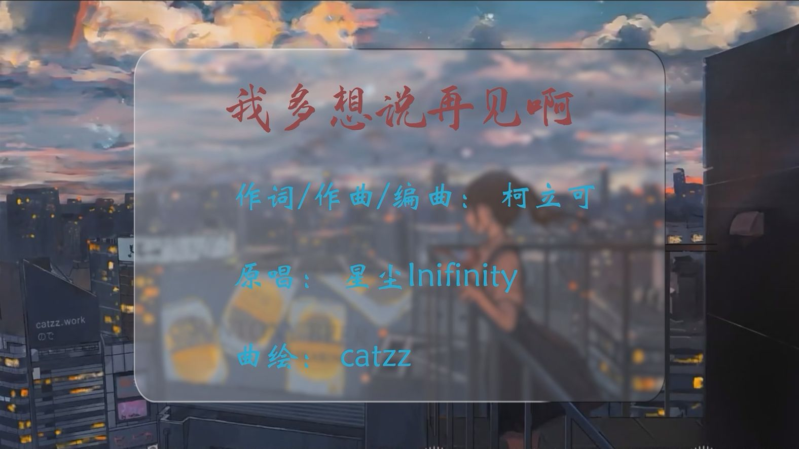
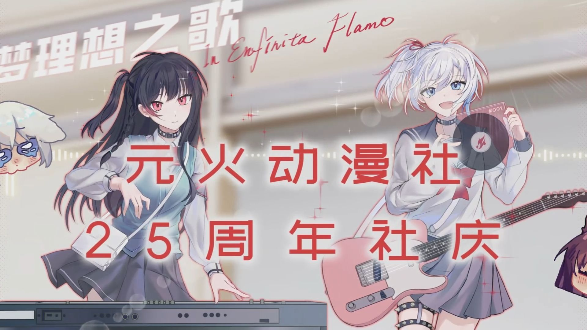
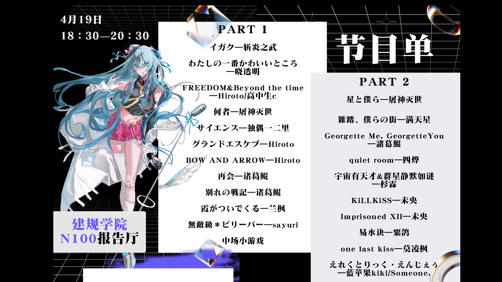
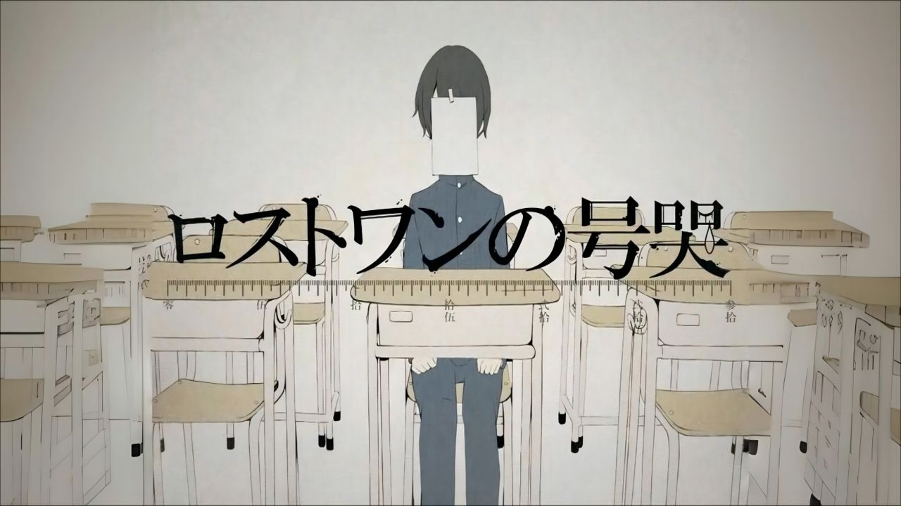
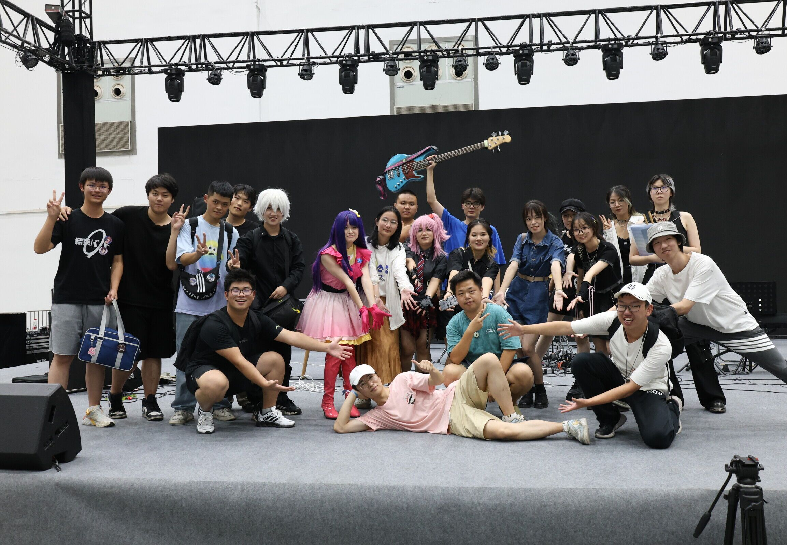
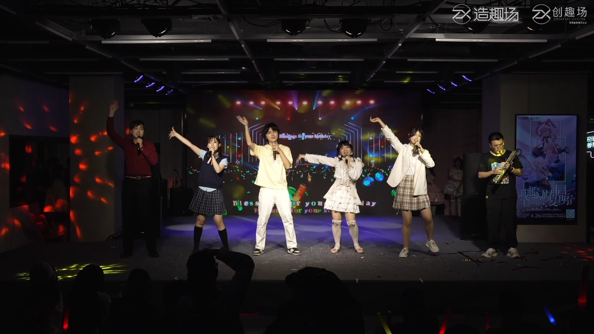

2025 高校术力口之声 Vol.1（原视频已删除）
收录时间: 2024-05-26 00:00:00 至 2025-05-26 00:00:00
视频列表
虚拟歌手作品
| V1 |
|
| 视频标题: 【言和原创】玉京北斗【PV付】【2025联合拜年祭单品】 |
| BV1doFyekEXW |
发布时间: 2025-02-04 00:00:00 |
| Vocal: 言和 |
歌手引擎: ACE Studio |
| 最高上榜: / |
| 关联动漫社：天津大学D-Touch动漫社，南风动漫社，西交现视妍 |
|
|
|
| V2 |

|
| 视频标题: 【Fantasy动漫社】调校-我多想说再见啊【2025“花火幻梦”幻想新年会】 |
| BV1VhL2zkEs1 |
发布时间: 2025-04-28 19:53:18 |
| Vocal: 洛天依，乐正绫 |
歌手引擎: VOCALOID |
| 最高上榜: / |
| 关联动漫社：FANTASY动漫社 |
|
|
|
| V3 |
|
| 视频标题: 【翻调】【洛天依XS】屑屑【长安大学新鲜空气动漫社二十代迎新会单品】 |
| BV114D5YEE3n |
发布时间: 2024-11-06 18:36:21 |
| Vocal: 洛天依 |
歌手引擎: X Studio |
| 最高上榜: / |
| 关联动漫社：新空动漫社 |
|
|
|
| V4 |
|
| 视频标题: 【原创术曲/重音テト】内卷审判！【青柠现视研 2025 春日晚会】 |
| BV1DzR9Y7Evk |
发布时间: 2025-04-05 17:27:53 |
| Vocal: 重音テト |
歌手引擎: Synthesizer V |
| 最高上榜: / |
| 关联动漫社：青柠现视研 |
|
|
|
| V5 |
|
| 视频标题: ⟪恭喜发财⟫ [洛天依] ”礼多人不怪“ [2025九重天动漫社演出部拜年祭单品] |
| BV1zjFNeqEVB |
发布时间: 2025-01-28 20:00:00 |
| Vocal: 洛天依AI |
歌手引擎: 猜测X Studio |
| 最高上榜: / |
| 关联动漫社：九重天ACG协会 |
|
|
|
| V6 |
|
| 视频标题: 【乐正绫原创】边缘音噪【吉林大学ACG音研部/吉林大学第三届ACG星光音乐节单品】 |
| BV1tx4y147ts |
发布时间: 2024-07-23 12:00:00 |
| Vocal: 乐正绫 |
歌手引擎: VOCALOID |
| 最高上榜: 周刊VOCALOID中文新曲榜♪625 11th |
| 关联动漫社：吉-ACG现视研 |
|
|
|
| V7 |
|
| 视频标题: 【洛天依原创feat.乐正绫、言和】丹心落【中术大学一周年庆单品】|“丹心焚作北辰星，烽火千古铭” |
| BV1LLQSYqEyY |
发布时间: 2025-03-15 20:30:00 |
| Vocal: 洛天依，乐正绫，言和 |
歌手引擎: VOCALOID |
| 最高上榜: 周刊虚拟歌手中文曲排行榜♪659 28th |
| 关联动漫社：中山大学WILL动漫协会 |
|
|
|
| V8 |
|
| 视频标题: 【重音Teto原创】白日梦【清华大学学生次世代动漫社2024社庆OP】 |
| BV1U3HPeqENJ |
发布时间: 2024-09-01 18:00:00 |
| Vocal: 重音Teto |
歌手引擎: Synthesizer V |
| 最高上榜: / |
| 关联动漫社：清华学生次世代动漫社 |
|
|
|
| V9 |
|
| 视频标题: 【洛天依·言和原创曲】流星与雏菊——约定在净土之上【原创PV付】 |
| BV1k2XAYXEDi |
发布时间: 2025-03-20 17:00:00 |
| Vocal: 洛天依，言和 |
歌手引擎: VOCALOID |
| 最高上榜: 周刊VOCALOID中文新曲榜♪659 6th |
| 关联动漫社：西电Shining动漫社 |
|
|
|
| V10 |
|
| 视频标题: 【永夜Minus】多普勒与终尽之空【原创曲PV付】 |
| BV1HJ4m1M71p |
发布时间: 2024-07-14 18:00:00 |
| Vocal: 永夜Minus |
歌手引擎: Synthesizer V |
| 最高上榜: 周刊虚拟歌手中文曲排行榜♪624 91st |
| 关联动漫社：浮泽动漫协会 |
|
|
|
| V11 |

PV制作：玖 (@玖J1U9 )")
|
| 视频标题: 【Kaleidos Kawaii 电音动漫夜】groovy planet / 如月青藍 feat. 初音ミク |
| BV1pr421c7zU |
发布时间: 2024-06-07 18:00:00 |
| Vocal: 初音ミク |
歌手引擎: VOCALOID |
| 最高上榜: / |
| 关联动漫社：ZACA动漫协会 |
|
|
|
| V12 |
|
| 视频标题: 【洛天依原创】《佑托邦》feat. 初音未来“这里容得下所有踉跄”【佐佑动漫社26周年社庆单品】 |
| BV1xNjuzfE3F |
发布时间: 2025-05-25 21:30:00 |
| Vocal: 洛天依，初音未来 |
歌手引擎: VOCALOID |
| 最高上榜: 周刊虚拟歌手中文曲排行榜♪669 105th |
| 关联动漫社：佐佑动漫社 |
|
|
|
论外虚拟歌手作品
| A1 |

|
| 视频标题: 【元火动漫社】25周年社庆原创OP《星愿之音》 |
| BV1zc41117ye |
发布时间: 2023-12-11 21:50:00 |
| Vocal: 洛天依，乐正绫 |
歌手引擎: ACE Studio |
| 最高上榜: / |
| 关联动漫社：元火originalfire |
|
|
|
| A2 |
|
| 视频标题: 共诗仙一品人生《诗酒》，潇洒醉笑云和月【天燃动漫社|寄明月翻填】 |
| BV1br4y1P7in |
发布时间: 2021-02-08 10:17:13 |
| Vocal: 洛天依，心华，言和，星尘，墨清弦，乐正绫 |
歌手引擎: VOCALOID |
| 最高上榜: / |
| 关联动漫社：天燃动漫社 |
|
|
|
| A3 |
|
| 视频标题: 【春日诸白动漫社】如果你能握住我的手 中文填词❤miku15周年生贺❤ |
| BV1sg411Q7h4 |
发布时间: 2022-08-31 00:16:27 |
| Vocal: 初音未来 |
歌手引擎: VOCALOID |
| 最高上榜: / |
| 关联动漫社：春日诸白动漫社 |
|
|
|
人声翻唱翻奏作品
| H1 |

|
| 视频标题: 【嘉年华2025】风蓝动漫社官方录播 |
| BV1hjLwz5EsQ（P21） |
发布时间: 2025-04-20 21:42:38 |
| Staff: / |
| 关联动漫社：华中大风蓝动漫社 |
|
| H2 |
|
| 视频标题: 九九八十一 |
| BV1uRqNYwENF |
发布时间: 2024-12-09 20:01:18 |
| Staff：空调，muika |
| 关联动漫社：东农EAG动漫社 |
|
| H3 |

|
| 视频标题: [乐团]lost one的号哭 |
| BV1qi421h7QA |
发布时间: 2024-07-27 06:00:00 |
| Staff: Vo. 茶离 Gt. 兜兜，秦椒 Ba. pmq Key. 飘 Dr. 游帆 |
| 关联动漫社：南航流火学生动漫社 |
|
| H4 |
|
| 视频标题: 【西农YUI动漫社】Mr.showtime-朝星堇、梦比姆、烧洋芋、菠萝哀歌 |
| BV1WGDLYmExD |
发布时间: 2024-11-07 12:00:00 |
| Staff: 演唱：朝星堇，梦比姆，烧洋芋，菠萝哀歌 摄影：祈星の愚者 |
| 关联动漫社：西农YUI动漫社 |
|
| H5 |
|
| 视频标题: 四重罪孽 |
| BV1rm421N7x4 |
发布时间: 2024-05-27 15:08:47 |
| Staff:/ |
| 关联动漫社：CWing动漫社 |
|
| H6 |

|
| 视频标题: 【东西放课后乐队演奏】猛独が襲う／初音ミク cover 6.8次元之门 |
| BV16xWjeYER6 |
发布时间: 2024-08-22 23:36:43 |
| Staff: Vo. 壹二 Gt. 阿玛，狂笑，error Ba. 小何 Dr. 河豚又炸了 |
| 关联动漫社：中南大东西动漫社 |
|
| H7 |

|
| 视频标题: 29.翻唱-blessing【财复同萌2025单品】 |
| BV11HGezJEVh |
发布时间: 2025-05-01 12:40:00 |
| Staff: 演唱：棵松，kiri，sako，SHIN，咲弦 口风琴：风雨留些白 |
| 关联动漫社：同济万有引力动漫协会 |
|